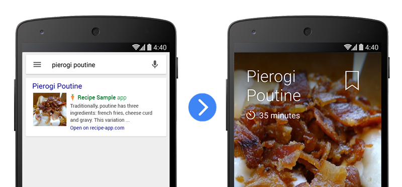
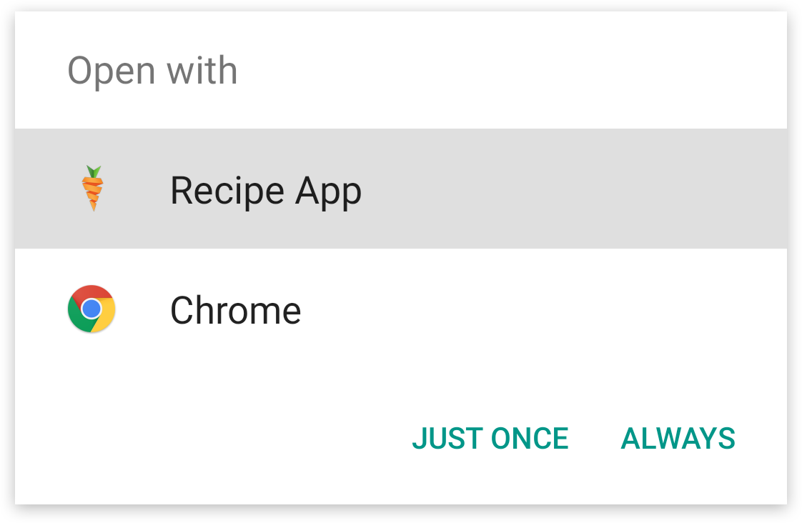
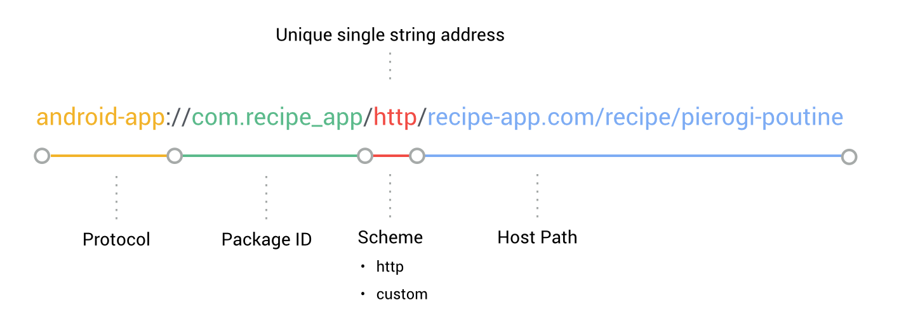
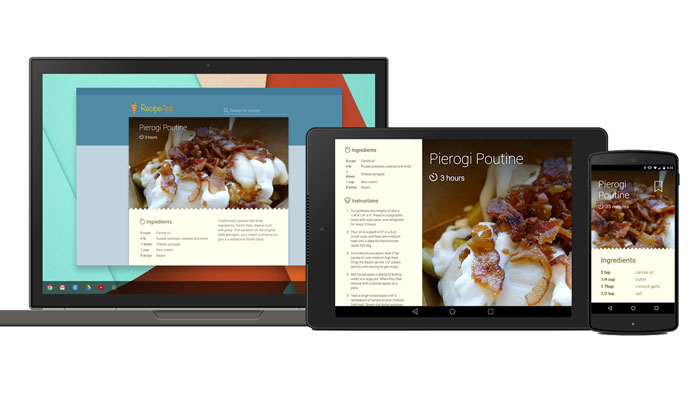

In this codelab, you’ll learn how to handle deep links in a sample Android app. You’ll be able to play with the sample app to simulate deep linking from search results on your own Android device.
What you’ll learn
- Updating the Android manifest to support deep links.
- Triggering deep links from the Android Debug Bridge.
What you’ll need
- Android Studio version 1.0+
- The sample code
- The Google app version 2.8+
- A test device with Android 4.1+
- A USB micro to USB cable.
How will you use this tutorial?
How would rate your experience with building Android apps?
You can either download all the sample code to your computer...
...or clone the GitHub repository from the command line.
$ git clone https://github.com/google/search-samples.git
First, let’s see what the finished sample app looks like. With the code downloaded, the following instructions describe how to open the completed sample app in Android Studio.
- Select the

android-deep-linkingdirectory from the sample code folder (Quickstart > Import Project… >android-deep-linking). - Click the
 Gradle sync button.
Gradle sync button. - Enable USB debugging on your Android device.
- Plug in your Android device and click the
 Run button. You should see the Recipe App home screen appear after a few seconds.
Run button. You should see the Recipe App home screen appear after a few seconds. - Open a command line terminal on your computer and enter the following Android Debug Bridge command:
adb shell am start -a android.intent.action.VIEW \ -d "http://recipe-app.com/recipe/pierogi-poutine" com.recipe_app
- Verify that a recipe appears in the sample app. This is the result of a deep link into the app!
Frequently Asked Questions
Now that you've deep deep links in action, it's time to dig deeper into what deep links are and how they work. First let's look at some sample links from our recipe website.
http://recipe-app.com/recipe/grilled-potato-salad http://recipe-app.com/recipe/haloumi-salad http://recipe-app.com/recipe/wedge-salad
If your app is set up to support web deep links, you can click on these web links in a web browser and get taken to the corresponding page within your Android app. Let's simulate that from ADB now:
- Make sure your device is in the same state you left it after testing the sample app above.
- Repeat the same Android Debug Bridge command you used previously, but this time, with a different recipe.
adb shell am start -a android.intent.action.VIEW \ -d "http://recipe-app.com/recipe/grilled-potato-salad"
You should see the recipe app refresh with the potato salad recipe.
- Try using the following recipe URLs and repeating the step above:
When you run this command, you should see a disambiguation dialog pop up which asks you if you want to open the link in a web browser or with the sample app. This disambiguation dialog doesn't show if we link directly to the sample app with an app deep link.

Android app deep links have a specific protocol and invoke the app package name, but otherwise look similar in structure to the URL of the corresponding pages. This is how they're constructed:

Using this protocol, we can create Android app deep links for the other recipes from our website like this:
android-app://com.recipe_app/http/recipe/grilled-potato-salad android-app://com.recipe_app/http/recipe/haloumi-salad android-app://com.recipe_app/http/recipe/wedge-salad
Now, lets try these app deep links on the sample app using the same steps as we used above except we'll pass in Android app deep links instead.
adb shell am start -a android.intent.action.VIEW \ -d "http://recipe-app.com/recipe/grilled-potato-salad" com.recipe_app
Now you should see the sample app display a recipe without requiring a disambiguation dialog. This is how our sample app will behave when it is completed.
Frequently Asked Questions

Now you’re ready to build on top of the starter project to add deep links to it.
- Select the
recipe-app-startdirectory from your sample code download (File > Import Project… >recipe-app-star). - Click the Gradle sync button.
- Click the Run button.
You should see the Recipe App home screen appear after a few seconds.
Open a command line terminal on your computer and try to trigger a deep link like this:
adb shell am start -a android.intent.action.VIEW \ -d "http://recipe-app.com/recipe/pierogi-poutine" com.recipe_app
You’ll see the following error because the starter project doesn’t yet support deep links:
Error: Activity not started, unable to resolve Intent { act=android.intent.action.VIEW
dat=http://recipe-app.com/recipe/pierogi-poutine flg=0x10000000 pkg=com.recipe_app }Don't worry we'll add support for deep links in the following steps.
The first step in adding deep links to your app is to update the Android manifest. Let's do that now. Add a new intent filter to the Activity of your Android manifest file so that the Android operating system knows which deep links your app can handle.
AndroidManifest.xml
The updated manifest provides the following new tags:
Tags |
Description |
|
Contains the view elements for the |
|
Specifies the |
|
One for each data URI format that the activity accepts. This is the primary mechanism to declare the format for our deep links. |
|
Used both for
|
With the intent declared for the RecipeActivity, you now need to add the code to the sample app to show a recipe when a deep link intent is received.
First, in the onCreate() method, add a call to onNewIntent() and pass in the intent that was sent to create the current Activity.
RecipeActivity.java
Then, define the onNewIntent() method and verify that the Intent is a deep link intent. If it is a deep link intent, extract the recipe URI from the intent data, look it up in the content provider and make a call to the showRecipe() method to display the recipe.
RecipeActivity.java
This takes the unique recipe ID in the deep link and looks it up in the local database of our recipe app. If a recipe with that ID is found, the app will show it on the screen.
Frequently Asked Questions
Now make sure that the deep links make it all the way to the correct views in your completed sample app.
- Click the Gradle sync button.
- Click the Run button. You should see the Recipe App home screen appear after a few seconds.
- Open a command line terminal on your computer and try to trigger a deep link like this:
adb shell am start -a android.intent.action.VIEW \ -d "http://recipe-app.com/recipe/pierogi-poutine" com.recipe_app
- Try changing these other recipe URLs into deep links and repeating the steps above.
http://recipe-app.com/recipe/grilled-potato-salad http://recipe-app.com/recipe/haloumi-salad http://recipe-app.com/recipe/wedge-salad
Frequently Asked Questions

Your app is now ready to handle deep links from Google Search.
What we've covered
- Updating the Android manifest to support deep links.
- Triggering deep links from the Android Debug Bridge.
Next Steps
- Add deep links to your own app.
- Make sure that your website and app are verified.
- Learn how to show autocomplete results.
- Read the App Indexing developer documentation.
- Watch these great devbyte videos:
Is your app in the Index?
Voice search in your app - Post questions and find answers on Stackoverflow under the deep-linking or android-app-indexing tags.